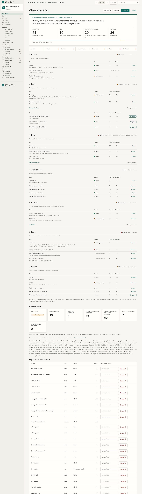
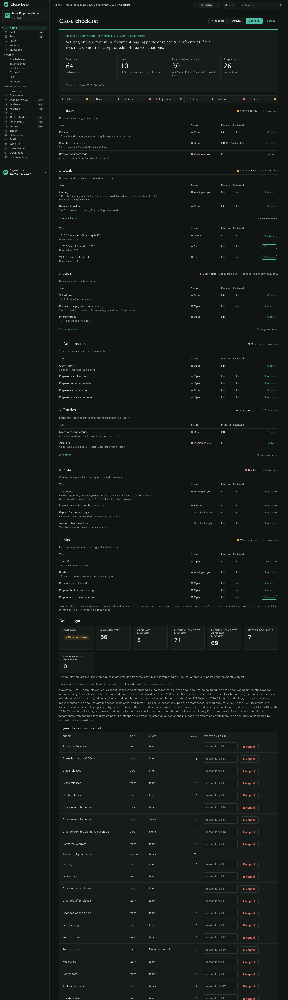

I built a program called Close Desk to help automate the close.
It uses a combination of workflows, skills and a CLI to streamline closes across multiple clients.
I am a CPA and MBA who has shown the ability to bring the latest technologies into the accounting life cycle.
What it does
Close Desk reads the bank and card statements and reconciles the balance sheet accounts. It finds miscoded transactions, duplicate payments, cutoff errors and things that should have been capitalized, then drafts the journal entries to fix them with the support attached. It also explains the big swings in the flux review and builds the close binder.
Nothing posts on its own. A person approves every entry.
The goal is to turn 20 to 40 hours of close prep into a quick review. I designed how it works and built it with AI coding tools.


How it scored
I tested it on made-up companies with errors planted in the books, then scored it against an answer key it never saw.
- Planted errors caught on the company I built it on
- 26 of 26
- Caught on a sealed company it had never seen
- 32 of 33
- Wrong fixes on that sealed company
- 0
- Attacks on the controls that were refused
- 57 of 57
What I've done
- I was the only finance lead on a NetSuite to Workday migration across 20+ subsidiaries. I ran a 25+ person team across four countries, from the chart of accounts and data migration through go-live, and we hit the date.
- After go-live I owned the monthly close: consolidation, foreign currency and intercompany for the US, India, UK and Israel.
- I set up ASC 606 revenue contracts in Workday and built the security roles and segregation of duties so it was ready for SOX.
- At a public company I reviewed the multi-entity month-end and quarter-end close, and wrote the technical memos on fixed-asset impairment (ASC 360) and user access.
- I built two Access databases (5M+ records) that fed 18 annual and 4 semiannual financial statements. They saved 2,000+ hours a year and got me Employee of the Quarter.
- I led the rollout of bots (RPA) for routine journal entries and got the other teams using them.
- As a consultant I fixed a client's prior-year journal entries, which got them $1.5M+ in tax savings.
- I worked on the carve-out accounting when Apollo bought a public company's Las Vegas operations.
Experience
- Accounting Manager (ERP Implementation Lead) Privately held conversational AI software companyMay 2025 to Jun 2026
- Accounting Manager Publicly traded clean energy companyApr 2024 to May 2025
- Director of Accounting and Operations Commercial real estate development and management companyNov 2022 to Apr 2024
- Accounting Manager Consultant Accounting advisory and consulting firmDec 2021 to Nov 2022
- Accounting Manager Publicly traded global resort operatorMay 2021 to Dec 2021
- Senior Accountant Privately held credit card issuerJul 2020 to May 2021
- Accounting Manager Publicly traded insurance brokerageAug 2019 to Apr 2020
- Senior Variable Products Accountant II Fortune 500 life insurance and annuity companyJun 2013 to Aug 2019
What I'm learning
- Python and SQL to automate accounting work. I've used SQL, VBA and Access for years, and now I'm building full tools.
- Using AI coding tools the way I'd run a close team: every change gets tested and reviewed before it goes in.
- Building controls into the software itself, like approval rules, an audit log, and making sure the person who prepares an entry can't approve it.
- Testing my own work like an auditor would: plant errors, then grade the results against an answer key.
Education
- Certified Public Accountant (CPA), active, California
- MBA, Finance, California State University, Fullerton
- BS, Accounting, San Diego State University
Contact
I'm looking for a controller, accounting manager or finance systems role. Happy to talk whenever works for you.
- tyleralvinocpa@gmail.com
- 949-291-8438
- Las Vegas, NV